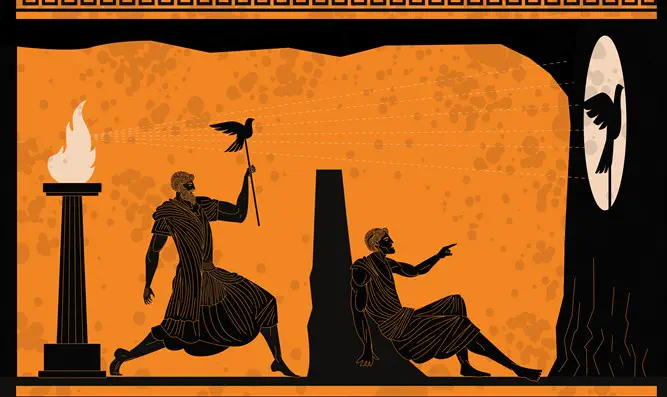

אמת
ביוון העתיקה, מכונה אלתיאה (״הבלתי מכוסה״). המחשבה היוונית היא שצריך לקלף לאט-לאט את העולם בשביל להגיע לאמת.
ברוסית, ישנן שתי מילים למושג אמת:
פרבדה - האמת העובדתית. אנו משווים מושג למציאות, וההתאמה שלה היא תוצאת אמת או שקר. המגרעה של משמעות זו היא שאנחנו לא יכולים לגלות שום דבר חדש, כי אנו סגורים בדעה הקיימת שלנו של האמת, ורק משווים אליה דברים. לדוגמה: קוסקוס בסופר שרשום עליו: ״קוסקוס ביתי אמיתי״. אנחנו יודעים מה זה קוסקוס, ולאחר בישול הקוסקוס, נדע להגיד האם זה פרסום כוזב או אמת.
איסטינה - שהיא האמת שמתגלית לאחר תהליך מחשבתי מסוים, ומגלה לנו משהו שלא ידענו קודם. יכולה להיות חוויה רוחנית או אינטלקטואלית.
אונטולוגיה
תורת היש.
בעברית הפועל ״to be״ לא קיים באותה צורה כמו בשפות לטיניות. לפועל שתי משמעויות, שמהוות עמודי תווך בחשיבה המערבית:
- קיום - existence.
- מהות - essence.
הפילוסוף מעוניין לגלות את האיסטינה, את החוקים שמאחורי הדברים. הוא גם שואל: האם הדבר קיים וניתן להשגה על ידי?
אמת קיומית = פרבדה
אמת מהותית = איסטינה
פילוסופים פרה-סוקרטים
ניסו להבין מהו העיקרון הבסיסי שמסביר את מגוון התופעות הטבעיות בעולם ומסבירות את היקום.
הרקוליטיס
פנטה ריי (Panta Rei) - הכל זורם. העולם נמצא בתהליך מתמיד של שינוי. אי אפשר לטבול באותו הנהר פעמיים. הרקוליטיס טוען שיש לעזוב כל ניסיון להגיע לאיסטינה, כי הכל מקרי ומשתנה בכל רגע. אין בעולם דבר ששומר על זהותו.
פרמנידס
"היש ישנו והאין איננו" - אין בעולם שינויים של היס הבסיסי, ההרכב הבסיסי נשאר. לא מאמין בבריאה או בסוף העולם. מאמין שאי אפשר לדבר על ה״אין״ כי הוא לקיים. המחשבה שדברים מתחילים ונגמרים היא אשליה. הכל סטטי. תפיסה אנטי-דתית במהותה: לא מאמינה בבורא.
התפיסה מתאימה לתפיסה הפיזיקלית המודרנית - אנרגיה לא נעלמת, רק משנה צורה.

אסכולת אתונה - רפאל

אפלטון
347-427 לפנה״ס
אפלטון מצביע למעלה - מאמין שהאמת נמצאת מעבר לעולם הפיזי, שאני חווה על פי החושים שלי ולכן הוא אשליה.
פיידון
המשתה
מכתבים
כתבי אפלטון
המדינה
סוקרטס בירוק, בדיאלוג עם תלמידים, בינהם אלקיביאדס.
סוקרטס
399-470 לפנה״ס. ״אבי הפילוסופיה״. האמין בדיבור, ולא בכתיבה. סבר שפילוסופיה מתרחשת בעת דיאלוג.
אריסטו
322 - 384 לפנה״ס
הטרגדיה היוונית
התיאטרון באתונה הייתה נחשבת לאמנות העל, שביטאה את כל גווניה של האמנות. תיאטרון לא היה סתם לפנאי - זו הייתה פעילות גדולה, ממומנת על ידי המדינה, פולחן דתי לאל דיונוסוס - אל הכאוס.
הפואטיקה
ספרו של אריסטו שעוסק בתיאטרון.
מאמין שתיאטרון הכרחי לעיבוד של רגשות ההמון, ושהתיאטרון בעל תפקיד פוליטי.
דאוס אקס מכינה
״אל מתוך מכונה״. תיאור מצב בסיפור או דרמה, בו הכותב מכניס לעלילה גורם נוסף שאינו נובע מהשרשרת הסיבתית העלילתית בשביל לפתור בעיה בעלילה. לפי אריסטו, זהו פיתרון בזוי ולא ריאליסטי.
מימזיס
מושג שטבע אריסטו, ופירושו חיקוי או ייצוג המציאות. אריסטו האמין שהעלילה חייבת להיות אמינה בשביל שהצופה יזדהה איתה, ויוכל לבצע סובלימציה של רגשותיו המודחקים, ולהגיע לקתרזיס.
קתרזיס
טיהור, מירוק, נקודת שיא שאחריה רגיעה. הקתרזיס הוא רגע של משבר ומתח עליון מצד אחד ורגע של פתרון ואיזון, הקלה והנאה, מצד אחר.
הקתרזיס הוא תגובה רגשית עזה הנחווית כפורקן אל מול מאורעות מחוללי חמלה, צער, ופחד. על פי אריסטו, הקרטזיס היא המטרה הרגשית של הטרגדיה היוונית. דרך עוררות אותן רגשות שליליים, הטרגדיה מובילה לפריקה רגשית, איזון נפשי, וזיכוך היצרים, שמאפשרת לנפש לחוות שחרור ותיקון מוסרי
הקתרזיס היא הסיבה האתית של אריסטו לקיום הטרגדיה, כיוון שהוא משיב לאדם איזון נפשי וסדר מוסרי.
היבריס
חטא הגאווה והיהירות. לרוב הגיבור בטרגדיה היוונית מאופיין בהיבריס, וההתנגשות שלו עם הגורל מניע את העלילה.
לוגוס
היגיון, תבונה. מחקר על פי השכל. בהקשר הרטורי, ניסיון לבסס טענה עם עקרונות לוגים רציונלים.
אתוס
בקונטקס של רטוריקה אריסטוטלית, אתוס היא אמינות הדובר. על פי אריסטו, על הדובר לייצר אתוס מיד בתחילת דבריו, בשביל לייצר כשירות מוסרית. לדעת אחרים כדוגמת איסוקרטס, האתוס של נואם מושפע מתפיסה כוללת של דמותו על ידי הקהל על פי היכרות הקודמת עם ההיסטוריה שלו ודעותיו, שמתקבלת עוד טרם החל לשאת את דבריו.
אריסטו מצביע על שלושה דרכים לבסס אתוס:
- פרונסיס - כישורים מעשיים, ידע נרכש.
- ארטה - כישורים מולדים, מתת אל.
- אונויה - רצון טוב כלפי המאזינים.
פגיעה באתוס יכולה להתחולל על ידי:
- לדובר יש עניין אישי גלוי בנושא ותוצאות דבריו
- לדובר יש מניע נסתר בנושא ותוצאות דבריו
- הדובר מגלה חוסר ידע או עניין בתחום עליו הוא מדבר
פאתוס
פנייה רטורית לרגשות הקהל. השימוש בפאתוס ככלי רטורי מכוון לשנות את דעת הקהל באמצעות פנייה לרגשותיו, במיוחד לצער או רחמים, וניסיון לעורר תחושות אהדה, חמלה, וצער אצלם.
אריסטו ציין 3 אפשרויות שימוש בפאתוס:
- מטאפורה, סיפור, סדרת שאלות מעוררת סקרנות
- הגשה רגשנית, ריבוי מרכיבים רגשניים בנאום
- בסיום נאום או דברים
רטוריקה
אמנות השכנוע באמצות השפה.
אפלטון האמין שתיאטרון - אמנות - היא הסחת דעת מסוכנת. הוא חשב שהיא שקר כפול, העתק של המציאות החושית שהיא אשליה גם ככה.
פרומתאוס
מחזה מאת אייסכילוס על מיתוס גניבת האש מהאלים והענקתו לבני האדם.
אייסכילוס
המחזאי הראשון, הוגה רעיון הכנסת השחקן השני.
סופוקלס
המחזאי השני. מוסיף את השחקן השלישי ואת הסצנה מסביב. (?)
אנטיגונה
מחזה מאת סופוקלס על אנטיגונה, אחותו ובתו של אדיפוס, הקרועה בין הבחירה להקשיב למלך תבאיי ולהשאיר את גופת אחייה בשדה לבין קבורתו. מתח בין צו המלך וצו האלים, ובין אינבידואל לחברה.
אדיפוס
מחזה מאת סופוקלס על אדיפוס שפותר את חידת הספינקס, ומנסה להלחם בגורל שניתן לו (להרוג את אביו ולשכב עם אמו). מלחמה בין לוגוס הפילוסוף ומיתוס גורלנו. נענש בגלל ההיבריס והתעוור.
מחזאים ביוון העתיקה
ליזיסטרטה
מחזה מאת אריסטופנס המתאר מרד של נשים בסדר הקיים, על ידי שביתת סקס מול הגברים.
אריסטופנס
הומרוס
מגדולי משוררי יוון העתיקה. מאה 8-7 לפנה״ס.
האודיסאה
אפוס מאת הומרוס. סיפור חזרתו של אודיסאוס מטרויה לביתו באיתקה.
כיום משמש גם כביטוי לתיאור מסע ארוך ורב תלאות.
קומדיה
שלוש סוגות הדרמה לפי אריסטו
אפוס
אפוס, או שירה אפית.
משל המערה

סיפור בספר ״המדינה״ של אפלטון, על קבוצת אסירים שנכלאה מגיל רך במערה חשוכה ורותקו בשלשלאות בצורה כזו שראשם מופנה תמיד אל צד אחד. מאחוריהם ישנה חומה, ומאחוריה - מדורה שלא נכבית לעולם, ומאירה את הקיר עליו צופים האסירים. בין האש לבין החומה חולפים אנשים נושאי פסלים. הפסלים נישאים מעל גובה החומה, ומוארים מצה אחד על ידי המדורה, וכך מטילים צל על הקיר שהאסירים רואים. כשהאנשים עם הפסלים משמיעים את קולים, הם שומעים את ההד ששב מן הקיר. לפיכך, סבורים האסירים שמה שהם רואים הוא המציאות, הם מפתחים תרבות ותאוריות לגביהם, ובונים את עולמם הרוחני לפי המשתקף בקיר.
אחד האסירים מצליח להשתחרר מכבליו, שריריו מנוונים מישיבה, וכוח כלשהו גורר אותו אל מחוץ למערה. כאשר הוא מגיע אל מחוץ למערה, הוא אינו יכול לראות דבר משום שהוא מורגל לחושך של המערה. אחרי זמן מה, הוא רואה צללים מטושטשים (כמו על הקיר), וכשעובר זמן הוא יכול להתבונן ולראות את הטבע, הציפורים, גרמי השמיים בלילה. הוא יכול גם להבחין בצילו שלו.
האסיר מחליט לחזור למערה ולספר לאסירים האחרים על נפלאות העולם בחוץ ולשחררם. כאשר הוא חוזר למערה, הוא שוב לא יכול לראות דבר, כי עיניו התרגלו לאור השמש ואינן רואות בחשכה. האסירים לועגים לו וטוענים שהתעוור. הוא מנסה לספר להם על העולם שבחוץ, אבל הם מבטלים את דבריו בזלזול. האסיר עומד על דעתו, אך הם מחליטים שאם מישהו ינסה לשחרר אותם, הם ירצחו אותו כדי לא להתעוור.
פירושים והסברים
- הסבר פילוסופי
העולם שלנו הוא עולם הצללים, עולם החושים - אשליה. ישנו עולם אידיאות קבוע שנגלה לפילוסוף שיוצא מהמערה. האור הוא מקור אידאי לאידיאיות - היש המושלם, השמש, הטוב הנצחי, אלוהים. - הסבר היסטורי
אפלטון מספר שיקוף היסטורי של משפט סוקרטס במקום דיאלוגים רגילים. אנשי המערה הם אנשי המדינה שחוששים מין ״המוארים״ שמחוץ למערה, ומעדיפים את הבערות, ולכן מענישים את הפילוסוף. - הסבר איזוטרי-פוליטי
בהקשר לשאר הספר ״המדינה״ בו אלפטון דן בשיטות משטר, ניתן לראות את המשל כהתנגדות לדמוקרטיה ולשלטון ההמונים, ובעד שלטון של מלך פילוסוף.
התקופה הקלאסית
יוון העתיקה (מאה 5 לפנה״ס)
דמוקרטיה
(באתונה - דמוקרטיה ישירה)
כללה רק גברים אזרחים בעלי רכוש.
תפקידים רבים אויישו בעזרת הגרלה ולא בחירות - שיטה שמבטאת אמון מוחלט באזרח הפשוט.
במלחמה נגד ספרטה, האתונאים מינו מפקד לצבא בצורה שרירותית ולכן הפסידו לספרטנים.
תרבות
מלטינית - ״קולטורה״: עבודת האדמה, חקלאות. החל מתקופת האימפריה הרומית, המשמעות של המושג הופכת מופשטת.
ע״פ אדוארד טיילור (המאה ה-19), המכלול של כל מה שאנו קוראים, מנהגי, חוקי וערכי החברה, אמנות, ספרות, אמונות ומידע מדעי.
ע״פ קליפורד גרץ, הקניין הרוחני של האנושות - הידע הנצבר על ידה לאורך ההיסטוריה. מסורת, מורשת, טכנולוגיה, ספריות, דרך חיים, תיאוריות.
בעברית, המילה תרבות מופיעה לראשונה בספר ״במדבר״, כמילה יחידאית (מילה המופיעה רק פעם אחת בתנ״ך), מה שהופך את משמעותה המקורית ללא ברורה. ניתן להבין מהטקסט כי המשמעות הינה שלילית, מהשורש תרבית, התרבות, אספסוף. ריבוי של אנשים חוטאים.
תחילת התרבות האנושית
מהי הנקודה שניתן לסמן כתחילת התרבות?
תחנות משמעותיות בהתפתחות האדם
- הפרדות מהקופים (הומנידיים - קבוצת קופי-האדם)
ההומוארקטוס, האדם הזקוף, שהתפתח לפני כ2.5-3 מיליון שנה. ההליכה על שתיים היא נקודת מפנה משמעותית: הרגליים הקדמיות משתחררות והופכות ידיים פנויות וחופשיות. - הכלים הראשונים
היכולת לבנות חפצים מופיעה לראשונה לפני כ1.5 מיליון שנה. התחילו להשתמש באש ולייצר כלים מורכבים. - קבוצה מאורגנת, מתקשרת, ובעלת טקסים
ההומוסאפיאנס, האדם היודע, מסמל את התחלת התרבות המופשטת והסימבולית. העדות הראשונה לכך, לפני כ150-160 אלף שנה, היא קבורה אנושית מסודרת. גופות שנקברו בדרך מסוימת, לכיוון מסוים, הן הוכחה למערכת אמונות מופשטת, הפרדות הנפש מהגוף. ההומוסאפיאנס האמינו במוות, ובחיים אחרי המוות, מושגים מופשטים שדורשים שפה ואמונה משותפת.
עדויות ראשונות לאמנות
יצירות האמנות הראשונות ביהסטוריה המתועדת הן ציורי מערות, פרסקות על קירות מערה מלפני כ40-50 אלף שנה. הביטוי הראשון ליצירתיות ותפיסה אסתטית של העולם שניתן להצביע עליו.
חשיבות המהפכה החקלאית על התרבות
מושג הקולטורה מופיע לראשונה עם המהפכה הניאוליתית (תקופת האבן החדשה), לפני כ-10,000 שנה. עד אז, האדם היה תלוי בציד ובלקט. רגע זה מסמן נקודת מפתח בתרבות האדם.
ציביליזציה מגיעה מהמילה הלטינית civitias, שמשמעותה עיר. ברגע שהאדם מתחיל לעבוד את האדמה, הוא לא יכול לנדוד ממקום למקום, ומתחילה התיישבות.
ניתן לקרוא את הסיפור המקראי של קין והבל בראי זה - קין, עובד האדמה, רצח את הבל, רועה הצאן. קין קולל ב״נע ונד״, ומתיישב ובונה את העיר הראשונה בתנ״ך. המאבק שלהם משקף את המאבק הקדום בין רועי הצאן לקבוצות המתיישבים החקלאים.
בנוסף לכך, החלקאות גורמת להתפתחות הסחר. בפעם הראשונה בקבוצה אנושית ישנו תוצר יתר. אנו יכולים לייצר יותר חיטה ממה שהכפר שלנו צריך בשביל להתקיים.
תהליך התפתחות הכתב מואץ במהפכה החלקאית. השימוש הראשוני של הכתב לא היה לשירה הוא אמנות. שימושו העיקרי בתקופה זו היא 2 מטרות:
- רישום המסחר. לדוגמה, טבלת אקסל עתיקה של מתי מכרתי כמה חיטה ולמי. הכתב אפשר שימור ידע, ובתחילתו שימש בעיקר לידע כלכלי.
- תיעוד ההיסטוריה. לפני הכתב, ההיסטוריה עברה בעל-פה ובאמצעים אריכאולוגים. ברגע שיש תעודות, ״קבלות״, חוזים, מסורת כתובה - ישנה היסטוריה כתובה.
החקלאות גם הובילה לייצור היין. יין הוא כלי לתקשר עם התת מודע, ובזוכותו גם מתחילות מיתולוגיות. יין הוא גם מותרות, כלומר, תוצרת של מזון ומשקאות שאינה לשם הישרדות. התרבות גם כן היא, מותרות. בתרבות היהודית, נוח הוא היינן הראשון, וגם השיכור הראשון.
רנסאנס
מצרפתית: ״לידה מחדש״. תופעה תרבותית שהחלה באיטליה במאה ה-15. נקודת ההתחלה של המודרנה המערבית, כפי שתבעה תנועת ההשכלה בצרפת במאה ה-18.
הלניזם
תרבות שמיזגה את היסודות היוונים, שהיו מורכבים כלפי פנים מאוסף של ערי-מדינה עצמאיות, הפכה אותה לאוניברסלית, ומיזגה אותה עם תרבויות מקומיות. אחת מיסודות תרבות המערב כיום.
על פי ניטשה, הטרגדיה היוונית מושתת על המתח שבין אפולון (אל היופי, הסדר, והתרבות) לדיוניסוס (אל הכאוס, הפרא, הטבע, הכיעור). הסדר התרבותי מול הטבע הכאוטי, העיר מול העולם.
פילוסופיה
הפילוסופיה (מיוונית: אהבת החכמה) מתפתחת באתונה המאה החמישית לפנה״ס.
מטריאליזם
רומא כבשה את יוון צבאית, אך יוון כבשה את רומא תרבותית: רומא השתלטה על יוון במאה ה-2 לפנה״ס, אך התרבות היוונית-הלניסטית הייתה דומיננטית והשפיעה על התרבות הרומית.
פילוסופיה רומית
הפילוסופיה הרומית היא מעשית בעיקרה, להבדיל מהפילוסופיה היוונית שהתמקדה במטאפיזיקה מופשטת. הפילוסופיה נשענה על המחשבה ההלניסטית אך התאימה אותם לערכים רומיים, כמו שירות המדינה, משמעת עצמית, ותחושת חובה (Pietas). דגש רב על איך ״לחיות נכון״.
רמוס ורומולוס
במיתולוגיה הרומית - אחים תאומים, בניו של אל המלחמה מרס. לפי האגדה, יינקו מזאבה, ובבגרותם ייסדו את העיר רומא. רומלוס בנה חומה, רמוס צחק עליה וקפץ מעליה, ורומולוס הרג אותו.
רומולוס מסמל את האופי של רומא - לוחמנות פרגמטית
רומא (מאה 5)
הפילוסופיה היוונית התעסקה באידיאליזם - אידיאות, רוח, רעיונות גדולים, לעומת מטריאליזם, חומרנות, ועושר ברומא
אפיקוריות
הזרם שהתפתח בעקבות אפיקורוס, ודגל בחיפוש אחר הנאה מתונה (אטרקסיה - שלווה) והמנעות מכאב.
קולטורה אנימה
מושג שטבע קיקרו, ומשמעותו המילולית: חקלאות-אדם. כפי שניתן לעבוד את האדמה, כך ניתן לעבוד את הנפש ברמה הרוחנית.
עידן הציר - תרבויות אקסיאליות
עידן הציר, או מהפכת הציר (שאשר סלה ולפי האינטרנט הוא בלבד, מכנה ״תרבויות אקסיאליות״, כלומר תרבויות הציר) הוא מושג שטבע הפילוסוף קרל יאספרס. המושג מתאר תקופה מכוננת במאות ה3-8 לפנה״ס, בה במרחבים שונים על אותו קו רוחב טרופי, התפתחו במקביל מחשבות מהפכניות בעלות מאפיינים משותפים, ללא קשר ישיר בין האזורים:
- ישראל - תקופת הנביאים, קריאת תיגר על פולחן וקורבנות, ביסוס האתיקה והצדק החברתי
- יוון - התפתחות הפילוסופיה, פיתוח החשיבה הרפלקטיבית, החשיבה על החשיבה
- הודו - בודהה - מתודה וכלי עזר מחשבתיים, ג'איניזם, הינדואיזם
- סין - קונפוציאניזם שעוסק בתיקון מוסר האדם והחברה, וטאואיזם שעוסק בדרך שלפיה ראוי לחיות.
כל התרבויות הנ״ל מאופניינות בתביעה מוסרית אוניברסלית שלא קשורה בהכרח לפולחן הדת עצמו, וכן בחשיבה רפלקטיבית.
אסתטיקה
מודרנה
סטואיזם
האסכולה הסטואית דגלה בחיים לפי התבונה (לוגוס), קבלת הגורל, ושליטה ברגשות (אפתיה). הסטואיקנים מאמינים שאין שליטה בגורל, והעולם חוזר על עצמו לנצח. השליטה היחידה האפשרית היא החוסן הפנימי.
אנטיסתנס
פילוסוף רומי (455–360 לפנה"ס).
אסקפיזם
ספקנות
האמונה שלא ניתן להגיע לאף החלטה, כי אפשר להטיל ספק בהכל. קריאת תיגר על היכולת להשיג הבנה כלשהי בעולם.
חילוניות
קידמה
אינדיבידואליזם
נצרות קתולית
אוניברסליות
העולם הוא רומא, רומא היא העולם. תחת האימפריה הרומית, אם היית בפנים - היית חלק מציביליזה, אם היית בחוץ - היית ברברי.
מקור המילה ברברי - חיקוי לפטפוטי הלשון הזרה של בני העם האחר. ללא-דוברי יוונית, שפות אחרות נשמעו כמו ג'יבריש (באר-באר-באר). שימש ביוון ורומא בלעג לעמים זרים ונחותים.